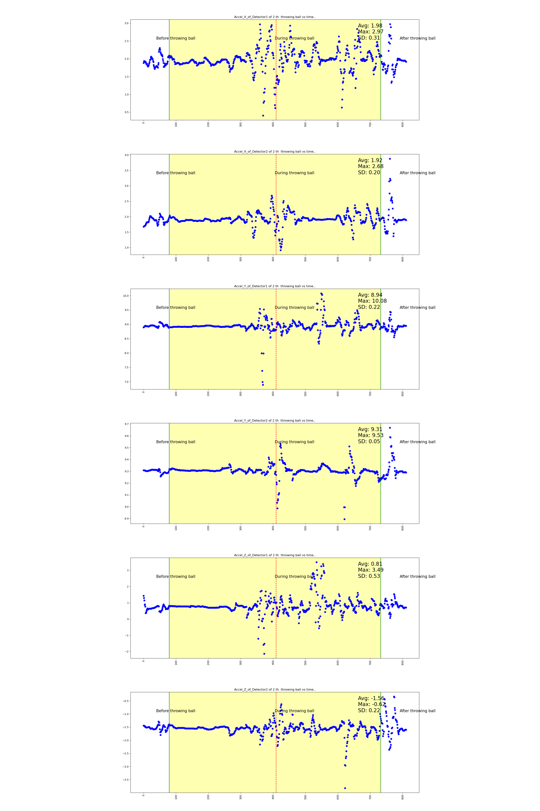

Original Video and 3D Reconstruction
Ball Velocity: 5.59 m/s
Did it hit the white ball: Yes
Did it hit the white ball: Yes
Joint Angle Changes
The angle of projection of the upper arm in the coronal plane relative to the sagittal plane.
The angle of projection of the upper arm in the sagittal plane relative to the coronal plane.
The angle between the trunk and the ground.
The angle between the upper arm and the forearm.
Eyetracker Analysis

Seat Cushion Analysis


IMU(Inertial Measurement Units) Analysis
